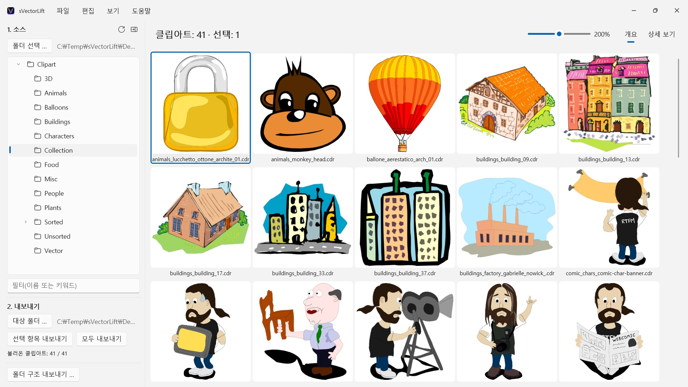
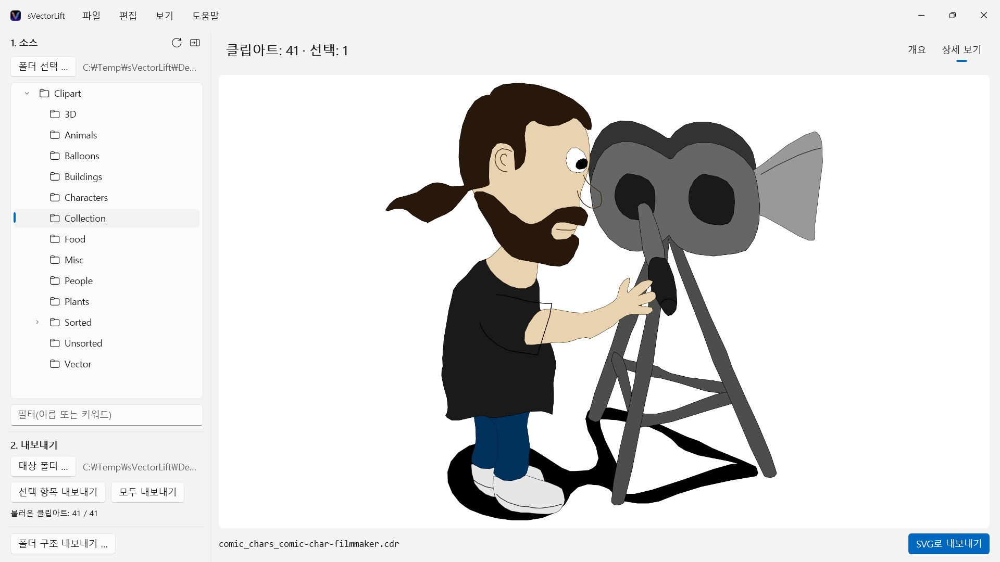

CorelDRAW CD에 담긴 수천 개의 빈티지 클립아트가 이제는 거의 어떤 프로그램도 열지 못하는 파일 형식에 갇혀 있습니다. sVectorLift는 컬렉션 전체를 한눈에 보여 주고, 지금 바로 쓸 수 있는 진짜 SVG로 되살립니다.
 영상 보기 – YouTube에서 3분 (영어, 한국어 자막)
영상 보기 – YouTube에서 3분 (영어, 한국어 자막)


책장 어딘가에 몇 년 전 구입한 클립아트 CD가 놓여 있습니다. 파일은 그대로 남아 있지만, PC의 프로그램 대부분은 그것을 열지 못하고, 컬렉션 전체를 한눈에 보여 주는 프로그램은 더욱 드뭅니다.
지원 언어(25개): Deutsch · English · Español · Français · Italiano · Nederlands · Português (Brasil) · Português (Portugal) · Svenska · Norsk · Suomi · Polski · Čeština · Hrvatski · Magyar · Română · Türkçe · Русский · Українська · فارسی · ไทย · 日本語 · 한국어 · 简体中文 · 繁體中文
앱은 Windows 표시 언어를 따릅니다.
sVectorLift는 그 그래픽을 다시 쓸모 있게 만듭니다. 각 그림을 진짜 SVG로 새로 구성합니다. 어떤 크기에서도 선명하고, 편집할 수 있으며, Illustrator, Affinity, Inkscape, Figma에서 — 또는 웹사이트에서 바로 쓸 수 있습니다. 다시 볼 수 있게 되는 데서 그치지 않고, 다시 쓸 수 있게 됩니다. 이름에 담긴 ‘Lift’가 뜻하는 바가 그것입니다. 빈티지 벡터 그래픽을 오늘의 도구 수준으로 끌어올린다는 뜻입니다.
열 수 있는 형식
- CorelDRAW 문서(.cdr), 버전 6부터 9까지
- Corel Binary Meta File(.cmx) — 다른 도구들이 읽기를 거부하는 초기 CDRX 방식까지
- Windows Metafile(.wmf)
- Computer Graphics Metafile(.cgm)
- QuickDraw 3D Metafile(.3dm, .3dmf) — 이미지로 렌더링
- Scalable Vector Graphics(.svg) — 그대로 표시
확장자가 .cdr인 파일 중 상당수는 사실 CorelDRAW 문서가 아니라 CMX입니다. 흔한 변환기들이 바로 여기서 실패합니다. sVectorLift는 둘 다 읽습니다.
sVectorLift는 클립아트 모음을 위한 앱입니다. 그림, 기호, 일러스트레이션이 대상입니다. 편집·조판 프로그램이 아니며, 여러 쪽짜리 브로슈어나 인쇄용 원고를 재현하려 하지 않습니다.
진짜 벡터 변환
미리보기 축소판을 찍어 내는 것이 아닙니다. sVectorLift는 그림 자체를 읽습니다. 패스와 베지에 곡선, 채우기 색, 그러데이션, 윤곽선과 파선 패턴, 패턴·텍스처 채우기, 삽입된 사진과 텍스트 객체까지 읽습니다. 결과물은 크기를 바꾸고 색을 바꾸고 편집할 수 있는 진짜 벡터 데이터이지, 그림을 찍은 사진이 아닙니다.
순수한 래스터 이미지는 대신 PNG로 내보내므로 잃는 것이 없습니다.
벡터 그래픽 대신 이미지가 필요한가요? ‘PNG로 내보내기’와 ‘JPG로 내보내기’는 SVG 파일을 포함한 모든 그림을 설정에서 지정한 크기의 이미지로 렌더링합니다.
모음 살펴보기
- 하위 폴더까지 포함한 전체 모음의 폴더 트리
- 선명한 벡터 미리보기 격자, 크기 슬라이더로 조절
- 상세 보기 — 화살표 키로 폴더를 넘기며 보기
- 이름 또는 키워드로 필터
- 파일 탐색기와 같은 다중 선택: 클릭, Ctrl+클릭, Shift+클릭, 드래그 선택, Ctrl+A
- 파일 탐색기에서 파일 하나를 바로 열기(‘연결 프로그램’ 또는 두 번 클릭)
- 최근 사용한 폴더가 멈춘 자리를 기억 — 하위 폴더와 선택한 파일까지
- 선택 항목 또는 폴더 전체를 한 번에 내보내기
- 하위 폴더를 포함한 폴더 구조 전체를 한 번에 변환 — 대상 폴더에 같은 구조가 그대로 유지됨
- 이름 변경, 파일 탐색기에서 보기, 휴지통으로 이동
- 폴더 트리의 폴더로 끌어서 놓기로 컬렉션 정리 — 파일 탐색기와 같은 규칙으로 Ctrl은 복사, Shift는 이동, Ctrl+Z로 실행 취소 가능, 파일 탐색기와 주고받기도 가능
PC에 빠르고 부담 없이
미리보기는 실제로 보고 있는 것만, 백그라운드에서 캐시와 함께 계산합니다. 큰 폴더도 수천 개의 파일을 몇 분씩 처리하며 멈추는 대신 곧바로 열립니다.
모든 것은 PC 안에 머무릅니다. 네트워크 연결도, 계정도, 데이터 수집도 없습니다.
CorelDRAW는 Corel Corporation의 상표입니다. sVectorLift는 독립적인 앱이며 Corel과 제휴 관계에 있지 않고 Corel의 보증을 받지도 않았습니다.
- Windows 11 이상 필요
- 24개 언어 지원
- 지원: SwiftAppsBavaria@gmx.net
- 개인정보 처리방침